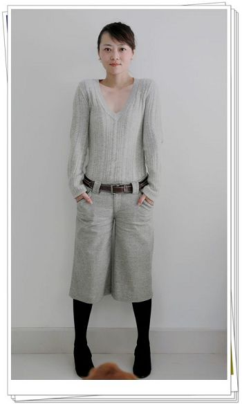
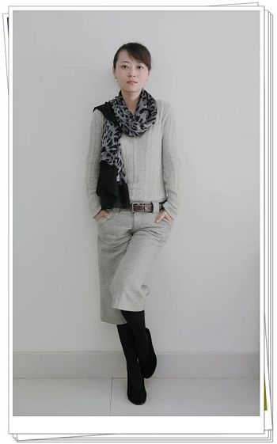

Dress Blog @ Apr 16, 2010
For me it's very important to show off who you are through your clothes,and people shouldn't be afraid of wearing more different pieces.I am more interested in clothes than trends.For me,fashion is your personal style,which you keep developping.


14 Responses to “Dress Blog”
2010-04-16
视觉享受。不能多看，看多了禁不住想要说出一些赞美的话，看起来像拍马P。
2010-04-16
好看～今天这身是我大爱的风格，简洁而大气～
2010-04-16
说实话，你比我老婆有型。你够fanshion。
2010-04-16
楼上的，期待能看到你老婆的型照。另外，fanshion是啥意思？这个词蛮有型的。
2010-04-16
赞！简单的打扮，被茶穿得很有气质，换成我这身，肯定被淹没在人群里
2010-04-16
onfire518是浙江台州温岭的王先生吗？
2010-04-16
第二张非常酷，看穿一切尘事
2010-04-16
嗯，好看
2010-04-16
这女的谁啊，太跩了。都没法看了。赶紧扯呼。。。
2010-04-16
very well said. really enjoy reading your dress blog.
2010-04-17
喜欢这一身！第二张里的豹纹围巾是点睛之笔。裤子我也有一条同样款式的，但是是咖啡色。只是现在要深吸一口气才能拉上拉链，而且口袋的内衬还会被肉给绷出来~~~~呃~~~~不说了，还是接着撞墙去~~~~
2010-04-17
还是比较喜欢鞋，要是能给个特写就更好啦~
2010-04-17
onfire518是浙江台州温岭的王先生
——茶，你怎么知道的？
－－fanshion应为fashion
2010-04-17
第二张大爱，那表情那神态，还有围巾
我一直觉得要把灰色穿好穿出味道，是需要些内力和气质的。如我这样的圆球体型，灰色穿身上就如同汗衫色了。
Leave A Reply
存档只读，评论已关闭。